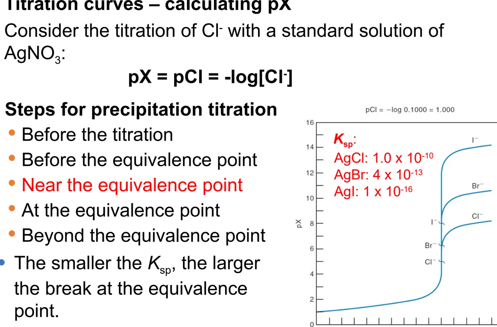
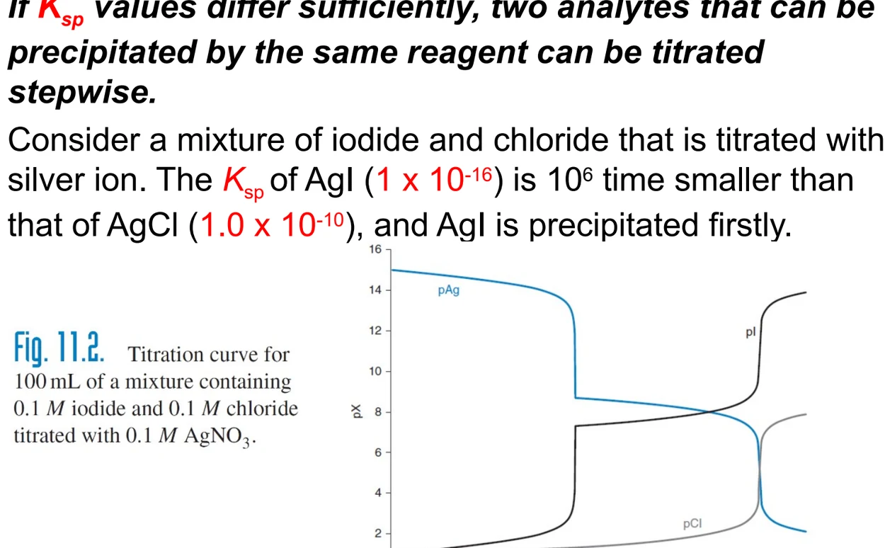
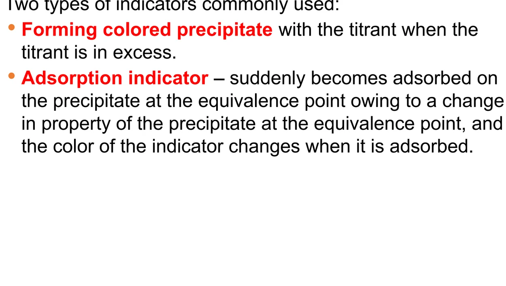
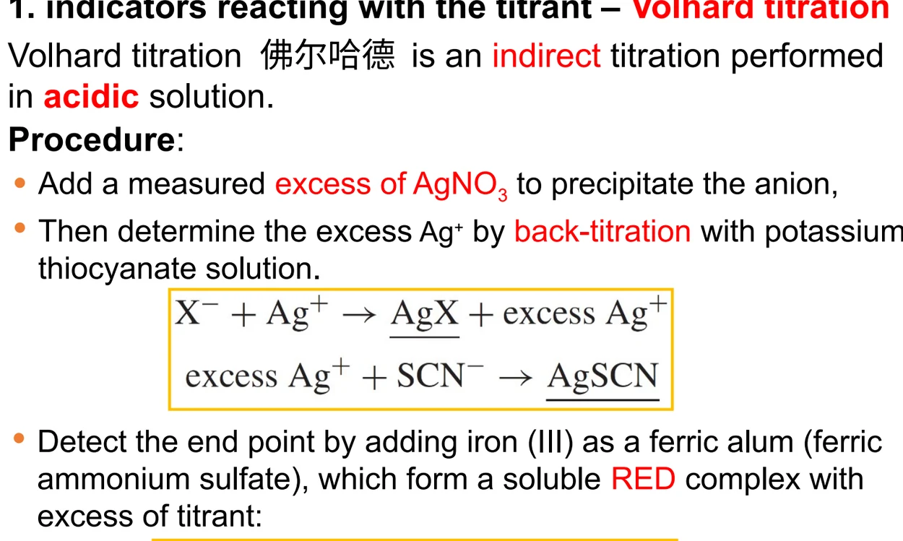
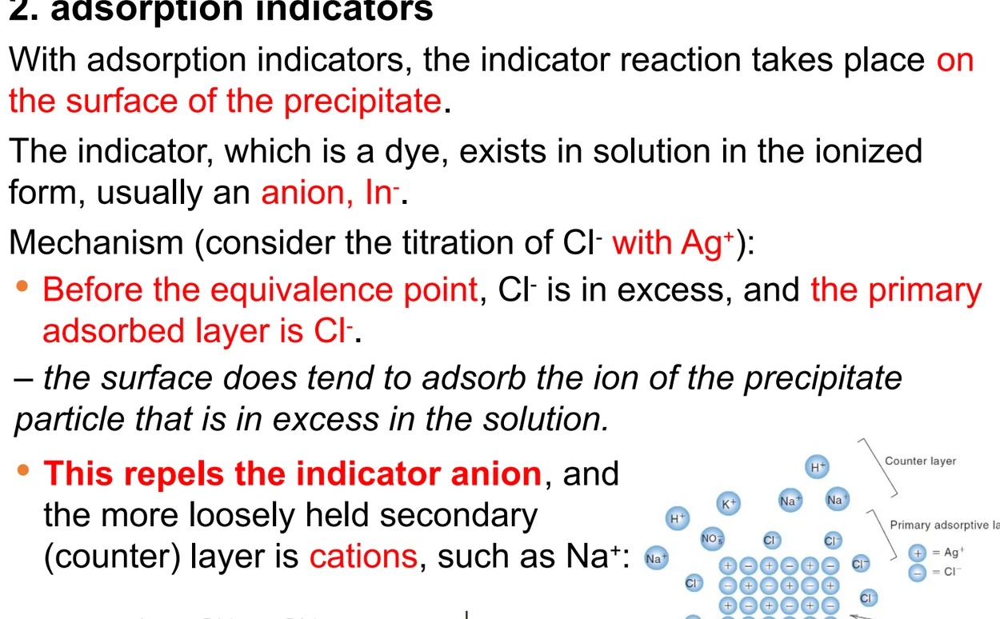
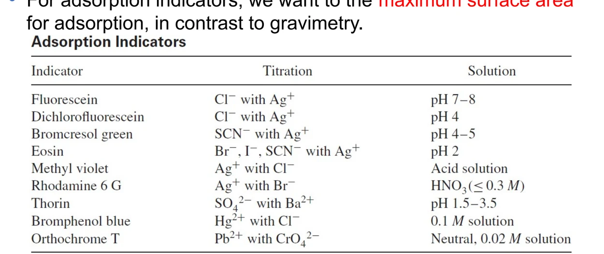

07 · PRECIPITATION TITRATIONS
沉淀滴定
沉淀平衡不是孤立的：酸、络合剂都会把沉淀拉进溶液。先把条件溶度积算清楚，再谈银量法的三条路线与两类指示剂。
本章初稿依教材第 11 章撰写，现按教师课件《Precipitation titrations》（共 27 张幻灯片）逐页校对后对齐。两者的重合度很高：课件 27 页中约 20 页直接对应教材第 11 章——沉淀平衡与 Ksp、酸与络合对溶解度的影响、条件溶度积、滴定曲线的逐点计算、分步沉淀以及实验数据（如食盐碘含量例题）两边数字完全一致。相对教材，课件主要补充了四处内容：① 指示剂的两类划分（与滴定剂反应生成有色沉淀、吸附指示剂）；② 莫尔法指示剂浓度的推导（由 Ag₂CrO₄ 的 Ksp 反推 0.011 mol·L⁻¹ 这一临界值）；③ 佛尔哈德法的适用边界（AgX 与 AgSCN 溶解度的比较决定要不要过滤沉淀）；④ 吸附指示剂表（Table 11.1 的完整形式）。这些内容已分别补入 §7.4–§7.7。
7.1 ACIDITY EFFECT
酸对溶解度的影响与条件溶度积
第 10 章把沉淀当成孤立的平衡处理：只要固体还在，[M⁺][A⁻] 就是常数。 但只要溶液中还发生别的平衡，这个常数的含义就要重新解读—— 因为真正影响溶解度的不是自由离子浓度，而是总分析浓度。
一个直接的问题：草酸钙在酸性溶液中能溶多少？ 草酸根是弱碱，会与质子结合。质子在这里扮演了和 Ca²⁺ 争夺草酸根的角色， 于是沉淀被拉进溶液。教材用三个平衡描述这个体系：
C₂O₄²⁻ + H⁺ ⇌ HC₂O₄⁻ Ka2 = 6.1 × 10⁻⁵
HC₂O₄⁻ + H⁺ ⇌ H₂C₂O₄ Ka1 = 6.5 × 10⁻²
令 OxT 表示所有草酸物种的总浓度，即 OxT = [H₂C₂O₄] + [HC₂O₄⁻] + [C₂O₄²⁻]。溶解度 s 既等于 [Ca²⁺]， 也等于 OxT（因为没有过量组分）。把 [C₂O₄²⁻] = OxTα₂ 代进 Ksp：
于是定义条件溶度积（conditional solubility product）K′sp：
这句话是理解 K′sp 的关键。K′sp 把 pH 的影响打包进了一个数里，所以它必须和 pH 绑定使用。这与第 9 章的条件形成常数 K′f 是完全平行的概念——两者都是把副反应系数并进主常数。
酸对草酸钙溶解度的影响
计算 CaC₂O₄ 在 [H⁺] = 0.0010 mol·L⁻¹ 溶液中的溶解度。
① 先算 α₂：
α₂ = (6.5 × 10⁻²)(6.1 × 10⁻⁵) / [(1.0 × 10⁻³)² + (6.5 × 10⁻²)(1.0 × 10⁻³) + (6.5 × 10⁻²)(6.1 × 10⁻⁵)] = 5.7 × 10⁻²
② 再算溶解度：s = √(Ksp / α₂) = √(2.6 × 10⁻⁹ / 5.7 × 10⁻²) = 2.1 × 10⁻⁴ mol·L⁻¹。
③ 对照：纯水中 s = √Ksp = 5.1 × 10⁻⁵ mol·L⁻¹。酸性条件下溶解度增大了约 4 倍。
多重平衡的存在不会使任何一个平衡表达式失效。在上面的例子里，Ksp = [Ca²⁺][C₂O₄²⁻] 始终成立——只要还有固体 CaC₂O₄ 存在，这两个自由离子的浓度乘积就是常数。溶解度之所以增大，是因为一部分 C₂O₄²⁻ 被转成了 HC₂O₄⁻ 和 H₂C₂O₄，体系必须再溶解更多固体来补充自由 C₂O₄²⁻。换句话说：常数没变，变的是自由离子的储备方式。
上面的计算假定平衡时 [H⁺] = 0.0010 mol·L⁻¹。但如果真的把 CaC₂O₄ 溶进 0.0010 mol·L⁻¹ 的 HCl，溶解过程会消耗质子（约五分之一变成 HC₂O₄⁻），平衡时 [H⁺] 会低于 0.0010。用 0.8 × 10⁻³ 重新算得 1.9 × 10⁻⁴ mol·L⁻¹，比刚才低约 10%。要得到精确结果，必须反复代入直到收敛——这就是迭代法。考试中若题目给出的是平衡 [H⁺]，直接用；若给出的是初始酸浓度，就要说明这里做了近似。
来源：教材 §11.1，Example 11.1，式 (11.4)–(11.6)。
7.2 MASS BALANCE
质量平衡法处理多重平衡
条件溶度积走的是修正常数的路线。教材同时给出另一条更系统的路线—— 质量平衡法（mass balance approach），即把所有的平衡表达式、 质量平衡式和电荷平衡式全部列出来，联立求解。当副反应比较复杂、 α 系数不好直接写时，这条路更稳。
教材的例题很典型：MA 的 Ksp = 1.0 × 10⁻⁸，HA 的 Ka = 1.0 × 10⁻⁶， 问 1 L 0.10 mol·L⁻¹ HCl 中能溶解多少摩尔 MA。
| 类别 | 表达式 | 编号 |
|---|---|---|
| 平衡常数 | [M⁺][A⁻] = 1.0 × 10⁻⁸ | (1) |
| 平衡常数 | [H⁺][A⁻] / [HA] = 1.0 × 10⁻⁶ | (2) |
| 平衡常数 | [H⁺][OH⁻] = 1.0 × 10⁻¹⁴ | (3) |
| 质量平衡 | [M⁺] = [A⁻] + [HA] = AT | (4) |
| 质量平衡 | [H⁺] = [Cl⁻] + [OH⁻] − [HA] | (5) |
| 质量平衡 | [Cl⁻] = 0.10 mol·L⁻¹ | (6) |
| 电荷平衡 | [H⁺] + [M⁺] = [A⁻] + [Cl⁻] + [OH⁻] | (7) |
来源：教材 §11.2，Example 11.2。六个未知量（[H⁺]、[OH⁻]、[Cl⁻]、[HA]、[M⁺]、[A⁻]）配六个独立方程——电荷平衡式可以由其余式子线性组合得到，所以不计入独立方程。
两条简化假设
方程够了，但直接解是四次方程。教材用两条在酸性溶液中显然成立的假设来降次：
| 假设 | 依据 | 化简结果 |
|---|---|---|
| [A⁻] ≪ [HA] | 酸性下 HA 的解离被抑制 | 由 (4) 得 [M⁺] = [A⁻] + [HA] ≈ [HA] |
| [OH⁻] 极小 | 强酸性溶液 | 由 (5)(6) 得 [H⁺] ≈ 0.10 − [HA] |
来源：教材 §11.2。化简的判据是酸的强弱与溶液的酸碱性，两条假设都必须在最终结果上自洽才算成立。
把 (1) 除以 (2)，消去 [A⁻]：
① 列全部方程：平衡常数式 + 质量平衡式 + 电荷平衡式，并检查方程数 ≥ 未知量数。
② 找简化假设：酸性下忽略 HA 解离、忽略 [OH⁻]；碱性下反过来忽略 [H⁺]。
③ 解完要自检：把结果代回被忽略的项，确认它确实小到可以忽略。若不自洽，就要换更强的假设或直接解方程。
来源：教材 §11.2，Example 11.2–11.3。
7.3 COMPLEXATION
络合效应与条件溶度积
酸效应处理的是阴离子被质子夺走。对称地，金属离子也会被络合剂夺走—— 银离子与氨络合会让氯化银溶解，这是定性分析里就学过的现象。 定量描述的方式与酸效应完全平行：把金属离子的分布分数 αM 引进 Ksp。
| 副反应 | 受影响的离子 | 分布分数 | 对 K′sp 的影响 |
|---|---|---|---|
| 酸效应 | 弱酸根阴离子 A⁻ | αA（如 α₂） | K′sp = Ksp / αA，变大 |
| 络合效应 | 金属阳离子 M⁺ | αM | K′sp = Ksp / αM，变大 |
| 两者同时存在 | 阴阳离子都被夺走 | αA 与 αM 同时 < 1 | K′sp = Ksp / (αA αM)，效果相乘 |
两个副反应同时存在时，溶解度按两条路线同时被拉高，所以条件溶度积要把两个 α 都除进去。
如果金属离子与配体 L 形成逐级络合物 ML⁺、ML₂⁺……，则
αM = 1 / (1 + β₁[L] + β₂[L]² + …)，其中 β 是累积形成常数。
这与第 9 章络合滴定的副反应系数是同一个公式——同一套数学在不同章节反复出现，这正是教材把它单独列一节的原因。
来源：教材 §11.3，Example 11.4–11.5，式 (11.10)–(11.11)。
7.4 TITRATION CURVES
沉淀滴定曲线的三段式
沉淀滴定要能用，需要两个条件：平衡要快，以及要有合适的终点检测手段。 和酸碱滴定一样，理解滴定曲线的形状才能选对指示剂、判断精度、处理混合体系。
银量法的曲线画法与酸碱滴定完全平行，只是把 pH 换成 pX （X 为卤素离子，pX = −log[X⁻]）。以 0.1000 mol·L⁻¹ Cl⁻ 用 0.1000 mol·L⁻¹ AgNO₃ 滴定为例，曲线分三段：
课件把沉淀滴定的计算明确切成五步，比“三段式”更细，考试时按这五步逐段套用最不容易出错：滴定前（before the titration）→计量点前（before the equivalence point）→计量点附近（near the equivalence point）→计量点（at the equivalence point）→计量点后（beyond the equivalence point）。其中“计量点附近”单独列一步是有道理的：这一小段恰恰是突跃所在的陡峭区，精密计算的误差也集中在这里。
三条曲线的 Ksp 必须记住：AgCl 1.0 × 10⁻¹⁰、AgBr 4 × 10⁻¹³、AgI 1 × 10⁻¹⁶。课件把结论压成一句话：Ksp 越小，计量点处的突跃越大（the smaller the Ksp, the larger the break at the equivalence point）——沉淀越难溶，终点越敏锐。

| 阶段 | 主导平衡 | 怎么算 [Cl⁻] |
|---|---|---|
| 滴定前 | 无需平衡 | 直接由初始浓度决定，pCl = −log 0.1000 = 1.00 |
| 计量点前 | 残留 Cl⁻ 为主要来源，沉淀的解离可忽略 | [Cl⁻] = (剩余 Cl⁻ 的毫摩尔数) / 总体积 |
| 计量点 | 饱和 AgCl 溶液 | [Cl⁻] = √Ksp = 1.0 × 10⁻⁵ mol·L⁻¹，pCl = 5.00 |
| 计量点后 | 过量 Ag⁺ 决定 [Cl⁻] | [Cl⁻] = Ksp / [Ag⁺]，[Ag⁺] = 过量 Ag⁺ 的毫摩尔数 / 总体积 |
来源：教材 §11.4。三段的分界点就是计量点，这一点与第 4 章酸碱滴定曲线的三段式结构完全对应。
氯离子滴定曲线的完整计算
100.0 mL 0.1000 mol·L⁻¹ Cl⁻ 用 0.1000 mol·L⁻¹ AgNO₃ 滴定，Ksp(AgCl) = 1.0 × 10⁻¹⁰。计算各点的 pCl。
0.00 mL：pCl = −log 0.1000 = 1.00。
20.00 mL：Cl⁻ 总量 = 100.0 × 0.1000 = 10.00 mmol；加入 Ag⁺ = 2.000 mmol；剩余 Cl⁻ = 8.00 mmol / 120.0 mL = 0.0667 mol·L⁻¹；pCl = 1.18。
99.00 mL：剩余 Cl⁻ = 0.10 mmol / 199.0 mL = 5.0 × 10⁻⁴ mol·L⁻¹；pCl = 3.30。
99.50 mL：剩余 0.05 mmol / 199.5 mL = 2.5 × 10⁻⁴ mol·L⁻¹；pCl = 3.60。
100.00 mL（计量点）：[Cl⁻] = √Ksp = 1.0 × 10⁻⁵ mol·L⁻¹；pCl = 5.00。
100.50 mL：过量 Ag⁺ = 0.05 mmol / 200.5 mL = 2.5 × 10⁻⁴ mol·L⁻¹；[Cl⁻] = Ksp / [Ag⁺] = 4.0 × 10⁻⁷ mol·L⁻¹；pCl = 6.40。
110.00 mL：过量 Ag⁺ = 1.00 mmol / 210 mL = 4.76 × 10⁻³ mol·L⁻¹；[Cl⁻] = 2.1 × 10⁻⁸ mol·L⁻¹；pCl = 7.67。
注意突跃的位置：从 99.5 mL 到 100.5 mL，仅 1 mL 之差，pCl 就从 3.60 跳到 6.40——近三个 pX 单位。这就是沉淀滴定可行的原因。
比较 Cl⁻、Br⁻、I⁻ 的滴定曲线：Ksp 分别为 1 × 10⁻¹⁰、4 × 10⁻¹³、1 × 10⁻¹⁶。三者的初始浓度相同，所以计量点前的曲线几乎重合。但在计量点及其之后，Ksp 越小则 [X⁻] 越小、pX 越大，曲线向上平移得更厉害，于是突跃也更宽。结论一句话：沉淀越难溶，终点越敏锐。
教材指出两者都可以用一个二次方程完整求解，但沉淀滴定更简单——因为 Ksp 的表达式中没有分母项，而络合滴定的形成常数按惯例写成缔合常数，分母里带着 [M][L]。两者在数学上是同一问题，只是常数写法不同。
来源：教材 §11.4，Example 11.6，式 (11.12)–(11.13)，Figure 11.1。
7.5 STEPWISE TITRATION
分步沉淀滴定
如果两种离子与同一滴定剂生成的沉淀溶解度差别足够大，它们就能分步沉淀， 在一次滴定中出现两个突跃。经典例子是 I⁻ 与 Cl⁻ 的混合物用 Ag⁺ 滴定—— AgI 的 Ksp 比 AgCl 小 10⁶ 倍，所以 AgI 先沉淀。
课件的判据说得更直接：只有当两个 Ksp 相差足够大时，两种能被同一试剂沉淀的组分才可能分步滴定（if Ksp values differ sufficiently, two analytes that can be precipitated by the same reagent can be titrated stepwise）。AgI 的 Ksp（1 × 10⁻¹⁶）比 AgCl 的（1.0 × 10⁻¹⁰）小 10⁶ 倍，这个差值就是分步滴定的依据，也正是 AgI 先沉淀的原因。

分步滴定的关键在于判断第二种沉淀何时开始出现。判据是： 滴定剂浓度 [Ag⁺] 达到使第二种沉淀的 Ksp 也被满足的那一刻。
食盐中碘含量的测定——分步沉淀的实际判断
美国食盐按 45 mg I / kg 盐加入碘化钾。忽略其他组分，若把盐配成 0.1 mol·L⁻¹ NaCl 溶液并用 AgNO₃ 滴定，问 AgCl 开始沉淀时还有多少比例的碘留在溶液中？
① 求 Cl⁻ 与 I⁻ 的摩尔比：M(NaCl) = 58.5 g·mol⁻¹，M(I) = 127 g·mol⁻¹，
(1000 / 58.5) / (0.045 / 127) = 4.82 × 10⁴
② 若 [Cl⁻] = 0.1 mol·L⁻¹，则 [I⁻] = 0.1 / (4.82 × 10⁴) = 2.07 × 10⁻⁶ mol·L⁻¹。
③ AgCl 开始沉淀时：[Ag⁺] = Ksp,AgCl / [Cl⁻] = 10⁻¹⁰ / 0.1 = 10⁻⁹ mol·L⁻¹。
④ 此时碘离子浓度：[I⁻] = Ksp,AgI / [Ag⁺] = 10⁻¹⁶ / 10⁻⁹ = 10⁻⁷ mol·L⁻¹。
⑤ 未沉淀的碘比例：10⁻⁷ / 2.07 × 10⁻⁶ = 4.83%。
这说明即使 Ksp 相差 10⁶ 倍，滴定误差仍有近 5%——要把碘测准，必须用别的方法（如电位法确定第二个突跃）。
从上面的计算能看出，仅凭 Ksp 相差 10⁶ 倍还不足以保证定量准确。实际的判据要结合两种离子的浓度比一起看：浓度比越接近 1，所需的 Ksp 差值就越大。这与第 4 章多元酸分步滴定的判据 Ka₁ ≥ 10⁴Ka₂ 是同一个思路——都是要求第一步反应足够完全，第二步才开始。
来源：教材 §11.4 分步沉淀滴定部分，Example 11.7，式 (11.14)–(11.15)，Figure 11.2；课件 7 slides 15-17。
7.6 INDICATORS REACTING WITH TITRANT
第一类指示剂：莫尔法与佛尔哈德法
终点可以靠电位法（测 pCl 或 pAg）确定，但更方便的是用指示剂。 沉淀滴定的指示剂理论与酸碱指示剂完全不同—— 它的变化不取决于溶液中某个离子的浓度，而是基于两种截然不同的机制。 这两类机制是把本节和下节全部内容串起来的线索：一类靠与滴定剂生成有色沉淀，另一类靠沉淀表面对染料的吸附。教材把它们分成两类。

第一类：与滴定剂反应生成有色沉淀。 指示剂在计量点后与过量的滴定剂反应，突然产生颜色变化。
| 方法 | 滴定对象 | 指示剂与反应 | 溶液条件 |
|---|---|---|---|
| 莫尔法（Mohr） | Cl⁻（用 Ag⁺ 滴定） | K₂CrO₄：CrO₄²⁻（黄）+ 2Ag⁺ → Ag₂CrO₄↓（砖红） | pH ≈ 8，中性或弱碱性 |
| 佛尔哈德法（Volhard） | Cl⁻、Br⁻、SCN⁻（返滴定） | 铁铵矾：Fe³⁺ + SCN⁻ → Fe(SCN)²⁺（红色） | 酸性（HNO₃）溶液 |
来源：教材 §11.4 指示剂部分。这两个方法是分析化学史上最经典的银量法：盖-吕萨克 1829 年用浊度法测定银的精度已达 0.05%，莫尔随后用 K₂CrO₄ 改进了终点判断。
莫尔法：指示剂浓度是算出来的
莫尔法的难点在于指示剂该加多少。这里要建立一个观念：铬酸钾的用量不是凭经验随手加的，而是由 Ksp 算出来的。 要求是 Ag₂CrO₄ 恰好在计量点开始沉淀，而计量点时溶液是饱和 AgCl 溶液，其摩尔溶解度 s(AgCl) = 1.0 × 10⁻⁵ mol·L⁻¹，即 [Ag⁺] = 1.0 × 10⁻⁵ mol·L⁻¹。代入 Ag₂CrO₄ 的 Ksp = 1.1 × 10⁻¹²：
由此得到0.011 mol·L⁻¹ 这个临界值。它给出的是一个方向：高于它，Ag₂CrO₄ 在计量点之前就析出；低于它，则必须超过计量点才析出。两种偏离都直接写成终点误差：
| 实际加入的 [CrO₄²⁻] | 后果 |
|---|---|
| > 0.011 mol·L⁻¹ | Ag₂CrO₄ 在 [Ag⁺] < 10⁻⁵ M 时（计量点之前）就析出，终点提前（结果偏低） |
| < 0.011 mol·L⁻¹ | 需要 [Ag⁺] > 10⁻⁵ M，即计量点之后才析出，终点拖后（结果偏高） |
| 实际取值 0.002–0.005 mol·L⁻¹ | 远低于理论值 0.011 mol·L⁻¹。理由是：铬酸根的深黄色会掩盖 Ag₂CrO₄ 的红色，浓度太高时需要过量 Ag⁺ 才能生成足量的沉淀被看出来；由此产生的指示剂误差用空白滴定扣除，或用 NaCl 基准物标定 AgNO₃ 一并校正 |
来源：教材 §11.4。这个细节很能说明问题：理论计算给出的是方向，实际取值还要考虑人眼对颜色的分辨能力。
这是本法的硬性条件，两侧的失效原因不同，要分开记：
pH < 6（酸性太强）：部分指示剂以 HCrO₄⁻ 形式存在（CrO₄²⁻ 被质子化），需要更多 Ag⁺ 才能生成 Ag₂CrO₄ 沉淀，终点拖后（结果偏高）。
pH > 10（碱性太强）：可能析出 AgOH / Ag₂O 沉淀，银离子被白白消耗。
所以实际操作用加入固体碳酸钙的方式维持在 pH ≈ 8——碳酸根是较强的布朗斯特碱，饱和碳酸钙溶液的碱度刚好合适。莫尔法适用于中性或非缓冲溶液，如饮用水中的氯离子。
佛尔哈德法：返滴定与那个必须过滤的例外
佛尔哈德法是间接滴定（indirect titration），在酸性溶液中完成：先加过量 AgNO₃ 把阴离子沉淀掉， 再用标准 KSCN 返滴定（back-titration）剩余的 Ag⁺。终点由铁铵矾指示—— 第一个过量的 SCN⁻ 会与 Fe³⁺ 生成可溶的红色络合物。

Ag⁺（剩余）+ SCN⁻ → AgSCN↓
Fe³⁺ + SCN⁻ → Fe(SCN)²⁺（红色）
返滴定法的适用边界完全由 AgX 与 AgSCN 的溶解度比较决定。课件给的判据是一条干脆的分界线：
| 被测离子 | AgX 与 AgSCN 的溶解度比较 | 是否需要过滤沉淀 | 原因 |
|---|---|---|---|
| I⁻、Br⁻、SCN⁻ | AgX 比 AgSCN 更难溶或与之相等 | 不需要 | 沉淀不会与滴定剂反应，终点清晰。判据是：AgX 的溶解度 ≤ AgSCN 时，不必过滤沉淀即可直接滴定 |
| Cl⁻ | AgCl 比 AgSCN 更易溶 | 必须过滤 | 沉淀会与滴定剂反应：AgCl + SCN⁻ → AgSCN + Cl⁻，把返滴定的 SCN⁻ 消耗掉，终点偏高且拖尾（a high and diffuse end point）。测氯时必须滤去 AgCl 沉淀，或加硝基苯把沉淀包裹起来使其不与 SCN⁻ 接触，然后再返滴定 |
来源：教材 §11.4；课件 7 slide 23。这是佛尔哈德法最容易被忽略的一步：判据只有一条——AgX 与 AgSCN 谁更难溶。比 AgSCN 更难溶或相当的（AgI、AgBr、AgSCN）可以带着沉淀直接滴；比 AgSCN 更易溶的（AgCl）必须先处理掉沉淀，否则沉淀会“倒吸”返滴定的 SCN⁻，测出的氯必然偏高。
① 测 I⁻ 时指示剂要等碘离子全部沉淀后再加——否则 Fe³⁺ 会把 I⁻ 氧化成 I₂，产生正误差。
② 指示剂生成的沉淀不能比被测沉淀更稳定，否则第一滴滴定剂就会显色，终点完全失效。
来源：教材 §11.4 指示剂部分，式 (11.16)–(11.19)；课件 7 slides 18-23。
7.7 ADSORPTION INDICATORS
第二类指示剂：吸附指示剂与法扬司法
吸附指示剂的机理走的是另一条路线：反应发生在沉淀表面（on the surface of the precipitate）， 而指示剂是一种染料（dye），在溶液中以离子形式存在，通常是阴离子 In⁻。 它的颜色变化来自于被吸附，而不是与滴定剂生成新化合物。整套机理可以拆成四步：
① 指示剂以阴离子形式存在。染料在溶液中解离成 In⁻，本身是游离态的颜色；反应只有在沉淀表面才谈得上。
② 计量点前，Cl⁻ 过量，吸附层是 Cl⁻。沉淀表面倾向于吸附溶液中过量的那种离子。此时第一吸附层（primary adsorbed layer）是 Cl⁻，粒子带负电，它排斥指示剂阴离子 In⁻，In⁻ 只能留在溶液里；而结合较松的反离子层（counter layer，又称第二层）是 Na⁺ 之类的阳离子。整个表面结构写作 AgCl: Cl⁻∷Na⁺。
③ 计量点后，Ag⁺ 过量，吸附层翻转为 Ag⁺。沉淀表面带正电，第一吸附层变成 Ag⁺，于是反过来吸引指示剂阴离子 In⁻，把它拉进反离子层吸附住。此时表面结构写作 AgCl: Ag⁺∷In⁻。
④ 被吸附的指示剂颜色与游离态不同，颜色突变即终点。同一个染料，被吸附前后的颜色不一样，所以“变色”本身就是终点信号。
以 Cl⁻ 用 Ag⁺ 滴定为例，沉淀表面的带电情况在计量点前后发生翻转：
| 阶段 | 溶液中过量的离子 | 沉淀表面的吸附层 | 结果 |
|---|---|---|---|
| 计量点前 | Cl⁻ 过量 | 第一吸附层是 Cl⁻，表面带负电；反离子层是 Na⁺ 等阳离子 | 指示剂阴离子 In⁻ 被排斥，不被吸附，溶液呈游离染料的颜色 |
| 计量点后 | Ag⁺ 过量 | 第一吸附层变成 Ag⁺，表面带正电 | In⁻ 被吸引进入反离子层而被吸附，颜色改变，指示终点 |
来源：教材 §11.4 吸附指示剂部分。写法上教材用 AgCl: Cl⁻∷Na⁺ 与 AgCl: Ag⁺∷In⁻ 表示两个阶段的表面结构（“∷”左边是第一吸附层，右边是反离子层）。

教材给出一个合理的解释：指示剂与 Ag⁺ 形成有色络合物，该络合物在溶液中太弱、无法稳定存在，但被吸附到沉淀表面后相当于被固定住，形成过程就被促进了。换句话说，吸附起到了降低有效溶解度的作用。
| 指示剂 | 适用滴定 | 使用 pH |
|---|---|---|
| 荧光黄（fluorescein） | Cl⁻ 用 Ag⁺ 滴定 | pH 7–8 |
| 二氯荧光黄（dichlorofluorescein） | Cl⁻ 用 Ag⁺ 滴定 | pH 4 |
| 溴甲酚绿（bromcresol green） | SCN⁻ 用 Ag⁺ 滴定 | pH 4–5 |
| 曙红（eosin） | Br⁻、I⁻、SCN⁻ 用 Ag⁺ 滴定 | pH 2 |
| 甲基紫（methyl violet） | Ag⁺ 用 Cl⁻ 滴定 | 酸性溶液 |
| 罗丹明 6G（rhodamine 6G） | Ag⁺ 用 Br⁻ 滴定 | HNO₃ 溶液 |
| 钍试剂（thorin） | SO₄²⁻、及 Ag⁺ 用 Cl⁻ 滴定等 | 稀 HNO₃ 或中性 |
来源：教材 Table 11.1；课件 7 slide 26。用吸附指示剂的滴定统称法扬司法（Fajans method）。表中“使用 pH”一列排下来就是一条规律：酸性越强的指示剂，可用的 pH 越宽——曙红可在 pH 2、二氯荧光黄到 pH 4、荧光黄只到 pH 7 附近。荧光黄适用于 Cl⁻、Br⁻、I⁻ 等多种卤化物（稀 HNO₃ 或中性条件均可），是最常用的一种。

① pH 不能太低。吸附指示剂大多是弱酸，酸性太强时解离不足，无法以阴离子 In⁻ 的形式被吸附；反过来，指示剂本身的酸性越强，可用的 pH 范围就越宽（the stronger an acid the indicator is, the wider the pH range over which it can be adsorbed）。
② 提高酸度会降低指示剂的吸附程度。酸度增大时指示剂解离减少，能进入反离子层的 In⁻ 变少，吸附量随之下降。
③ 与重量分析相反，吸附指示剂希望沉淀表面积尽可能大。沉淀滴定的终点靠表面吸附，胶体状态（小晶粒、大比表面积）反而更好；而重量分析追求大晶粒以减少表面吸附与共沉淀。两者的要求正好相反——这是本节最容易被忽略的一处对比，考试里常作为简答点。
（补充一条教材的推演：沉淀越难溶、阴离子吸附越强，就能用吸附更强的指示剂，也就能在更酸的条件下滴定。Br⁻ 与 Ag⁺ 生成的沉淀比 AgCl 更难溶、吸附更强，所以能用曙红在 pH 2 下滴定；而 Cl⁻ 只能用荧光黄，且必须接近中性。）
吸附指示剂通常是弱酸，pH 太低就解离不足，无法以 In⁻ 形式被吸附。但吸附也不能太强，否则它会在计量点前就把沉淀的 Cl⁻ 从第一吸附层挤走，造成终点提前。
这一对矛盾决定了规则：沉淀越难溶、阴离子吸附越强，就能用吸附更强的指示剂，也就能在更酸的条件下滴定。Br⁻ 与 Ag⁺ 生成的沉淀比 AgCl 更难溶、吸附更强，所以能用曙红在 pH 2 下滴定；而 Cl⁻ 只能用荧光黄，且必须接近中性。
荧光黄在 pH 7 可用于所有卤化物（它不挤走任何一个）；二氯荧光黄在 pH 7 会挤走 Cl⁻ 但在 pH 4 不会——所以在 pH 7 用二氯荧光黄测氯，结果往往偏低。
来源：教材 §11.4 吸附指示剂部分，Table 11.1；课件 7 slides 24-26。
7.8 METHOD COMPARISON
三种银量法的系统对比
三个方法都以 AgNO₃ 为核心，但适用的对象、溶液条件和终点机制各不相同。 把它们的差别整理成一张表，考试时按被测离子 → 选方法 → 定 pH → 说终点的顺序回答即可。
| 对比项 | 莫尔法 | 佛尔哈德法 | 法扬司法 |
|---|---|---|---|
| 滴定方式 | 直接滴定 | 返滴定（先加过量 Ag⁺） | 直接滴定 |
| 标准溶液 | AgNO₃ | AgNO₃ + KSCN | AgNO₃ |
| 被测对象 | Cl⁻、Br⁻、I⁻、CN⁻ | Cl⁻、Br⁻、I⁻、SCN⁻ 及多种阴离子 | Cl⁻、Br⁻、I⁻、SCN⁻ |
| 指示剂 | K₂CrO₄ | 铁铵矾（Fe³⁺） | 吸附指示剂（荧光黄类染料） |
| 终点现象 | 生成砖红色 Ag₂CrO₄ 沉淀 | 生成红色 Fe(SCN)²⁺ 络合物 | 沉淀表面吸附染料而变色 |
| 溶液条件 | 中性或弱碱性，pH ≈ 8 | 酸性（HNO₃） | 视指示剂而定，pH 2–8 |
| 主要限制 | 酸性下 CrO₄²⁻ 质子化；碱性太强生成 AgOH | 测 Cl⁻ 必须过滤 AgCl；测 I⁻ 要后加指示剂 | 指示剂吸附强度与 pH 之间存在权衡 |
来源：教材 §11.4 全文归纳。选择顺序：先看被测离子，再看溶液酸碱性，最后确认终点机制是否与共存离子冲突。
这是三个方法对比时最容易被问的一点。莫尔法和法扬司法都受 pH 限制，而佛尔哈德法的指示剂是 Fe³⁺/Fe(SCN)²⁺ 体系，它的显色反应不涉及弱酸根的质子化，所以在强酸性下照样工作。更实际的好处是：酸性条件能防止很多金属离子水解，也让 Fe³⁺ 保持游离状态——这让佛尔哈德法成为适用面最广的银量法。
第 10 章讲的是怎么把一个沉淀做干净、称准，属于重量法；第 11 章讲的是怎么用沉淀的体积关系定量，属于滴定法。两者共享同一套沉淀平衡，只是测量的物理量不同——一个称质量，一个量体积。教材也指出，很多用重量法做的分析改用沉淀滴定时操作更方便，代价是精密度略低。本章引入的条件溶度积 K′sp 与第 9 章的条件形成常数 K′f 也是平行的概念，都是把副反应打包进主常数。
来源：教材 §11.1–§11.4 归纳；课件 7 slides 1-27（本章已按课件逐页校对对齐，课件与教材重合度约 20/27 页）。